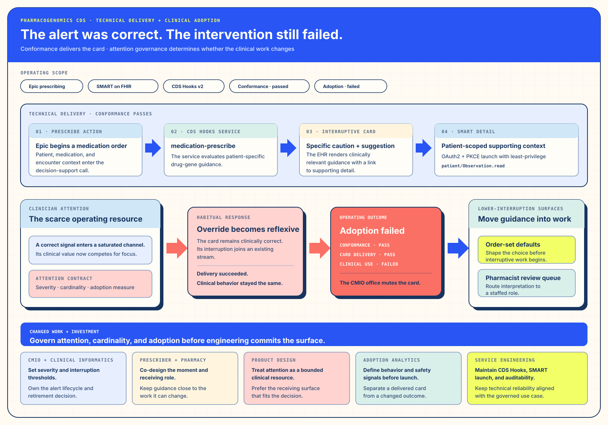

Track ISolution Architecture · Purpose and Changed WorkTreat clinical attention as a finite operating resource.
I. Solution Architecture — Treat attention as an operating resource
§a Debrief — The Integration Was the Easier Problem
Discrete genomic results made a new promise possible: bring drug–gene guidance to the clinician while a medication order is being composed. The project initially framed success as a correct trigger, a clinically specific card, and a link into patient context. Those conditions mattered, but they described the delivery mechanism rather than the clinical intervention.
The scarce shared object was clinician attention. Every interruptive card competed with existing safety, formulary, documentation, and operational alerts. A correct additional message could still reduce the signal-to-noise ratio of the whole prescribing surface.
§b Bottleneck — Specificity, Cardinality, and an Undefined Adoption State
§c Intervention — Correct Plumbing, Deferred Stewardship
The source-period implementation used the medication-prescribe hook for a prescribe-time request.
A current implementation would choose order-select or order-sign according to the intended
workflow moment. Patient-specific pharmacogenomic logic returned a concise card, and a SMART application supplied
detail. The technical path was coherent. The fatal
trade was organizational: threshold ownership, card cardinality, adoption interpretation, and receiving
alternatives remained outside the initial build.


§d Outcome — A Correct System That Failed in Use
The hook fired, the patient context was correct, and the detail application opened as designed. In use, the card joined an already saturated interruptive stream and was routinely dismissed. The receiving organization muted the intervention. That is the outcome: technical success and clinical-adoption failure in the same system.
The failure still changed the organization’s next move. Guidance shifted toward order-set defaults and a pharmacist receiving queue, while interruptive cards became candidates for explicit severity and cardinality stewardship.
§e Repeatability — Design the Receiving Workflow Before the Card
Before implementation, name the behavior the intervention should support, the population receiving it, the severity that earns interruption, the expected volume, the alternative workflow, and the group responsible for continued tuning. This turns attention from an assumed capacity into an operating resource.